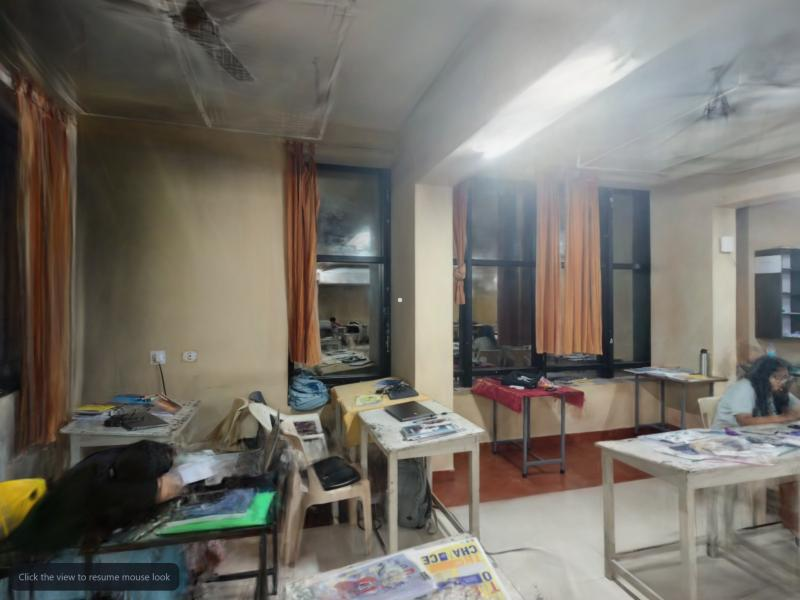
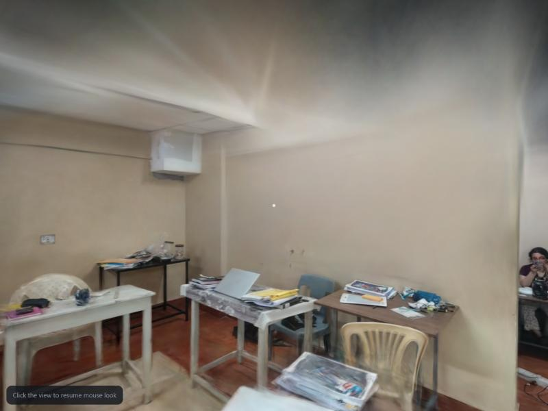

Team: [TBD names, institute] · Team ID: [TBD] · Repo: https://github.com/ujeshauchitha-glitch/NAMMA-SPACE · Live viewer: [TBD URL]
Turn an ordinary smartphone video of an indoor space into a photorealistic 3D model that can be walked through in a web browser, with no manual 3D modelling. Round 1 covers the capture procedure, reconstruction and free-roaming first-person exploration. Points of interest and path planning (Round 2) are designed for, not implemented.
Approach: structure-from-motion (COLMAP) recovers camera poses; 3D Gaussian Splatting (Brush) trains a photorealistic scene; the browser renders it with Spark. Splats are a rendering representation, not collision geometry, so the Round 2 navigation layer is planned separately (section 6).
smartphone video -> validate -> frames + blur filter -> COLMAP (poses, sparse model)
-> Gaussian-splat training (Brush) -> output checks -> compressed .sog -> web viewer
(React + TypeScript + Vite + react-three-fiber + Spark)
Every stage is a separate command with its own output check, so a stage can be re-run or moved to another machine. A run is only reported successful after a person walks the result and approves it.
Full procedure in docs/SOP.md. Rules and why:
- 1x lens, stabilisation off, locked focus/exposure: one fixed camera model; stabilisation warps frames and breaks pose estimation.
- Slow walking (~0.5 m/s), no fast rotation: blur is the main cause of failed reconstruction.
- Perimeter loop, centre passes, corner pans, two-way doorway crossings: every surface is seen from 3+ positions; the closed loop lets the solver cancel drift.
- Original-quality file: a WhatsApp-compressed 480p copy of a clip registered only 14% of frames; the original 1080p registered 94%.
.sog: 27.7 MB from a 430.9 MB PLY (budget 50 MB), 65 s.inspected_ok is set only by --approve after a person walks the scene. [TBD: inspection note]React + TypeScript + Vite; Three.js via react-three-fiber; Spark renders the splats. First-person controls: pointer-lock mouse look, WASD, sprint, height adjust; touch fallback. A scene is described by scene.json (splat, spawn, orientation, scale, walk bounds), so a new capture needs no code change. Measured performance: [TBD fps / device / load time].
POIs as JSON in metre-scaled coordinates; a walkable-area grid with A* pathfinding. Splats carry no reliable surfaces, so the grid is first hand-annotated from a floor plan, with floor-plane fitting on COLMAP's sparse points as the upgrade. AR navigation is deferred.
First real capture: one classroom, 180 s, 1080p, handheld phone video.


| Metric | Value |
|---|---|
| Frames registered | 287 / 306 (94%) |
| Sparse points / reprojection error | 35,337 / 0.81 px |
| Splats | 1,825,915 |
| Web file | 27.7 MB (.sog) |
| Training / compression time | 39.8 min / 65 s |
Observed artefacts: smeared ceiling (rarely filmed), ghosting around moving people, floaters mid-room.
scene.json; the first scene's scale is not yet metric.COLMAP (BSD), Brush (Apache-2.0), Spark (MIT), three.js (MIT), react-three-fiber (MIT), React (MIT), Vite (MIT), OpenCV (Apache-2.0), ffmpeg, splat-transform (MIT).